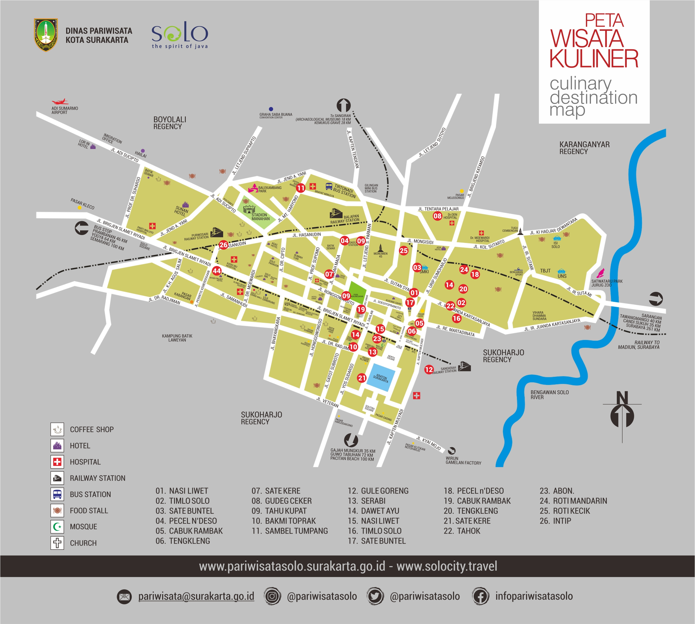

Selamat Datang Di Kota Solo
Sejarah |
Wisata |
Kuliner |
Budaya
Sejarah Kota Solo
Sejarah Kota Solo (Surakarta) berawal dari pemindahan ibu kota Kerajaan Mataram Islam dari Kartasura ke Desa Sala pada tahun 1745 oleh Pakubuwono II akibat kerusuhan, yang kemudian menjadi cikal bakal Keraton Surakarta Hadiningrat, sementara nama "Solo" muncul karena kesulitan pelafalan orang Belanda terhadap "Sala". Kota ini berkembang menjadi pusat kebudayaan Jawa yang kaya, saksi lahirnya pergerakan nasional seperti Budi Utomo, hingga menjadi kota modern yang lestari di bawah administrasi Provinsi Jawa Tengah setelah kemerdekaan.

Wisata Kota Solo
Wisata Kota Solo menawarkan beragam pilihan, mulai dari wisata budaya & sejarah (Keraton Surakarta, Pura Mangkunegaran, Museum Batik Danar Hadi, Kampung Batik Laweyan, De Tjolomadoe, Heritage Palace), alam & keluarga (Solo Safari, Taman Balekambang, Kemuning Sky Hills, Alun-Alun Kidul), hingga kuliner & belanja (Pasar Klewer, Pasar Triwindu, Ngarsopuro Night Market) dan religi (Masjid Raya Sheikh Zayed), semuanya menyajikan pengalaman khas Jawa yang kaya dan modern.

Kuliner Kota Solo
Kuliner Solo sangat beragam, mencakup hidangan utama seperti Nasi Liwet, Selat Solo, dan Tengkleng, jajanan pasar legendaris seperti Lenjongan, Serabi Notosuman, serta makanan unik seperti Sate Kere (dari tempe gembus) dan Tahok (kembang tahu kuah jahe), belum lagi aneka camilan dan oleh-oleh khas seperti Intip Goreng, Brem, dan Ampyang, yang semuanya menawarkan cita rasa manis-gurih khas Jawa yang kaya rempah.

Budaya Kota Solo

Budaya Solo kaya akan tradisi keraton seperti Sekaten, Grebeg (Maulud, Besar, Sudiro), dan Kirab Pusaka Malam 1 Suro yang melibatkan gamelan pusaka dan gunungan hasil bumi, serta upacara adat seperti Sadranan (ziarah leluhur), Tari Bedhaya Ketawang, dan perpaduan budaya Jawa-Tionghoa pada Grebeg Sudiro. Selain itu, Solo juga terkenal dengan Batik Solo (motif geometris & filosofis), Wayang Orang Sriwedari, Keris, dan kuliner khasnya, menjadikannya pusat warisan budaya yang dilestarikan melalui berbagai festival dan acara tahunan.